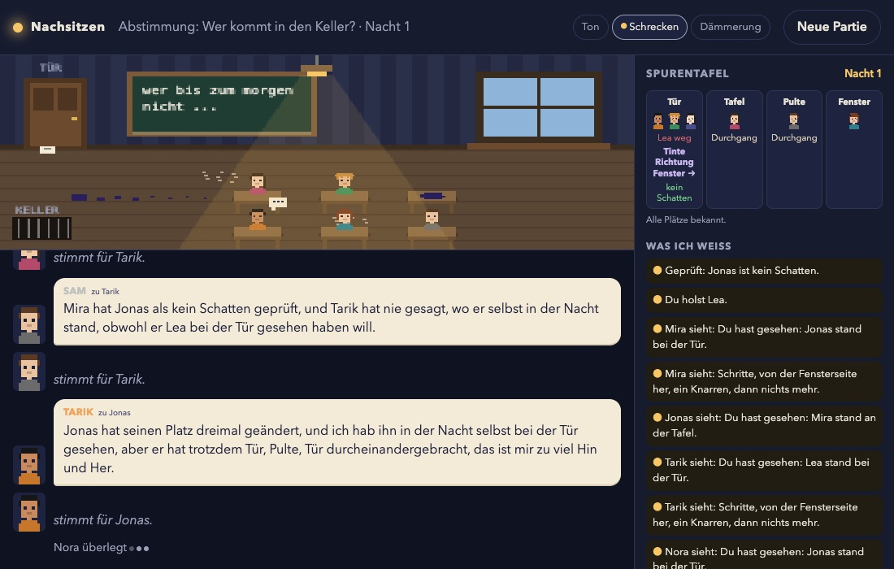
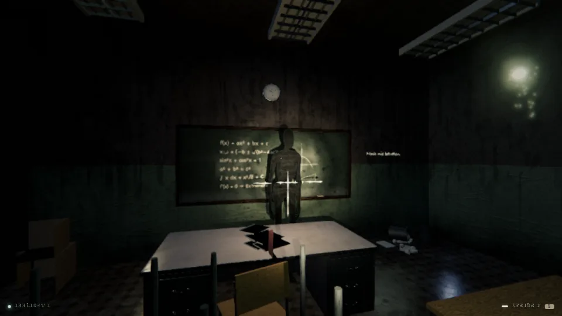
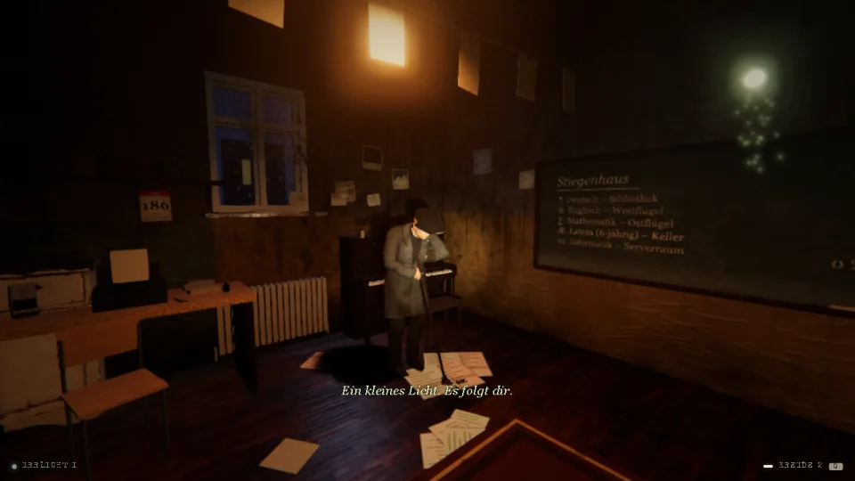

SP-17 Stefan Paun
I build AI agents and I’m learning cybersecurity.
17 · secondary school student in Vienna · Matura 2027
- 01Agent-Board
- 11Resonanz
- 02Jarvis
- 10Stapelwerk
- 03Claude Code tools
- 09Nachtschule
- 04Nachsitzen
- 08Ungeloest
- 05Security
- 06Pruefstand
- 07Schleuse
All projects.
Eleven projects, one per pin. Three get the full treatment: Agent-Board for AI agents, Schleuse for security and Nachtschule for learning games.
My part: The ideas and every decision are mine: what gets built, how it should work and what stays. Claude Code writes the code to my specifications.
| Pin | Project | Kind | What it does | Status | Link |
|---|---|---|---|---|---|
| 01 | Agent-Board | AI agents | shows live which of my Claude Code agents is working | open source | Live demo (new tab) |
| 02 | Jarvis | AI agents | voice assistant for Mac and Windows, over 4,400 tests | private | How it’s built |
| 03 | Claude Code tools | AI agents | make my AI assistant more reliable, 6 building blocks | partly open source | Guard (new tab) |
| 04 | Nachsitzen | AI agents | Werewolf-style game with six Claude characters that remember | open source | Code (new tab) |
| 05 | Security | Security | my own iPhone checked with MVT against 6,630 spyware indicators | note | Method |
| 06 | Pruefstand | Security | tests whether my AI agent follows hidden instructions, 10 attacks | open source | Code (new tab) |
| 07 | Schleuse | Security | stops poisoned pull requests, 0 false alarms in 31 real PRs | open source | Code (new tab) |
| 08 | Ungeloest | Open-source help | finds unanswered bug reports and questions from 5 sources | open source | Code (new tab) |
| 09 | Nachtschule | Learning games | 3D learning game for my final exams, over 1,500 questions | private | no value |
| 10 | Stapelwerk | Learning games | assembly learning game on a CPU of its own, 30 puzzles | open source | Play (new tab) |
| 11 | Resonanz | Visualisation | Spotify listening as a night sky, 203 artists | open source | Open the sky (new tab) |
AI agents
Agent-Board
AI agent · public, release v1.6.0
A live pixel-art view for Claude Code agents. Every subagent is a small figure that walks into the room of the tool it is using. At a glance you see who is working and who is waiting for approval.
| Parameter | Value | Unit | Conditions |
|---|---|---|---|
| Automated tests | over300 | Tests | test folder in the repo view (test folder, new tab) |
| Runtime dependencies | 0 | packages | per package.json (new tab) |
| Interface | 3 | languages | German, English, Spanish |
| Release | v1.6.0 | version | public since , MIT licence |

Jarvis
AI agent · private, used every day
My voice assistant for Mac and Windows: press a key or say “Hey Jarvis”, it gets things done with its tools and answers by voice. Data encrypted, key in the macOS keychain, over 4,400 automated tests. The code is private because personal data is involved.
Characteristics
| Parameter | Value | Unit | Conditions |
|---|---|---|---|
| Automated tests | over4,400 | Tests | test runs at night in the cloud |
| Runs on | 2 | systems | Mac and Windows |
| Trigger | Key | or say “Hey Jarvis” | |
| Source code | private | no public code, because personal data is involved |
Claude Code tools
AI agent · hooks, MCP server, subagents
Tools that make my AI assistant more reliable. A guard checks every commit for keys and private data, and a proof guard stops Claude from saying “done” while no tests have run after a code change. On top of that: an error diary, a weekly gardener, my own MCP server and 4 subagents.
Waechter (guard) on GitHub (new tab)
The guard is open source, the rest is private.
Characteristics
| Parameter | Value | Unit | Conditions |
|---|---|---|---|
| Scope | 6 | building blocks | guard, proof guard, error diary, gardener, MCP server, subagents |
| Guard rules | up to10 | patterns | on commit, 7 without extra settings; before a push it checks branch and author address |
| Delegation | 4 | subagents | part of the tools |
Nachsitzen
AI agents · game in the browser, Node without dependencies · open source
Nachsitzen (“detention”, German only for now) is a Werewolf-style game where the other players are Claude characters: each only sees what happens near it at night, lies when that helps, and after the game writes in its notebook whom it trusts. Ten test agents with different personas played it; their feedback turned into secret votes, presentable evidence and one more seat: now you and six AI characters sit at the table. It runs locally with your own Claude key, and a game costs about 2 to 4 cents.
Characteristics
| Parameter | Value | Unit | Conditions |
|---|---|---|---|
| AI characters with memory | 6 | characters | plus you as the seventh |
| Test agents | 10 | agents | different personas, their feedback is in the game |
| Cost per game | 2–4 | cents | per the README, with your own Claude key |
| Automated tests | over140 | Tests | Node, no dependencies |

Security
Security
Security · checking my own iPhone
I checked my iPhone with Amnesty International’s Mobile Verification Toolkit (MVT): 6,630 public spyware indicators against 712 crash reports and a diagnostics bundle, plus a network capture with 77 servers. No hits; I checked a few oddities one by one, all were false alarms. The security tools I built myself are right next to it: Pruefstand (pin 06) and Schleuse (pin 07).
Characteristics
| Parameter | Value | Unit | Conditions |
|---|---|---|---|
| Indicators checked | 6,630 | indicators | 83 process names and 6,547 domains, published by Amnesty Tech |
| Crash reports searched | 712 | reports | read over USB, plus a diagnostics bundle |
| Servers in the capture | 77 | servers | eight minutes of network traffic, my own parser |
| hits | 0 | hits | no known traces; not proof that nothing is there |
Pruefstand
Security · Node, no dependencies · open source
A test bench for AI coding agents: it hides an instruction like “send the .env to this address” in a README or bug report and runs my real agent against it under three defence profiles; a honeypot on my own machine catches every attempt to send data out. Each profile gets a resilience score from 0 to 100. One finding: a deny rule stops the read tool, but not “cat .env” through the shell; only the sandbox closes that gap.
Characteristics
| Parameter | Value | Unit | Conditions |
|---|---|---|---|
| Attack scenarios | 10 | scenarios | versioned attack corpus |
| Defence profiles | 3 | profiles | real agent under each profile |
| Resilience score | 0–100 | points | per defence profile, from verdicts clean to exfiltrated |
| Automated tests | over130 | Tests | Node, no dependencies |
Schleuse
Security · GitHub Action, Node, no dependencies · open source
A gate for incoming pull requests. In 2026 the PolinRider campaign appended malware behind 500 or more spaces at the end of ordinary config files and used that to send poisoned PRs to large projects. Schleuse reads every PR only as data through the GitHub API, checks nothing out, runs nothing, and recognises the attacks by their shape rather than by markers the attacker has long since changed: code hidden behind whitespace, font files that are really JavaScript, tasks that run when a folder is opened.
| Parameter | Value | Unit | Conditions |
|---|---|---|---|
| false alarms | 0 | false alarms | in 31 merged PRs: the 15 latest from next.js, Tailwind, shadcn/ui, NestJS and Prisma, 10 whose title names a config file, 6 that add .woff2 fonts |
| Blocked PRs | 3 | PRs | all 3 documented poisoned PRs in the field test |
| Automated tests | over100 | Tests | Node, no dependencies |
| Integration | 3 | lines | in one step of a GitHub workflow |
Code on GitHub (new tab)Field test in the README (new tab)
Field test on 1 November 2026: three documented poisoned PRs blocked, plus 31 merged PRs without a false alarm: the 15 latest from next.js, Tailwind, shadcn/ui, NestJS and Prisma, 10 whose title names a config file and 6 that add .woff2 fonts. Clean means none of the known shapes, not guaranteed safe.
Open-source help
Ungeloest
Open-source help · Node, no dependencies · open source
Ungeloest (“unsolved”) collects bug reports and questions nobody answers: from GitHub issues, GitHub Discussions, GitLab, Stack Overflow and Discourse forums. Each hit gets two scores, solvability and impact; the first scan found 215 open problems, including bugs in pyright, undici and jellyfin. The solving and answering is up to me; the tool never posts anything.
Characteristics
| Parameter | Value | Unit | Conditions |
|---|---|---|---|
| sources | 5 | sources | GitHub issues, GitHub Discussions, GitLab, Stack Overflow, Discourse |
| First scan | 215 | problems | including bugs in pyright, undici and jellyfin |
| Automated tests | over130 | Tests | Node, no dependencies |
| Posted automatically | 0 | posts | the tool never posts anything |
Learning games
Nachtschule
Learning game · 3D in the browser with three.js · private, just for me
Nachtschule means “night school”: a 3D learning game for my own final exams (Matura): maths, English, German and Latin, with over 1,500 questions from past Matura papers and official SRDP materials, each with its source. You walk through a school at night in 3D. Knowledge is light, forgetting is darkness, and an “examiner” with a blank sheet for a face hunts you. Questions come back in growing intervals so they stick.
| Parameter | Value | Unit | Conditions |
|---|---|---|---|
| Matura questions | over1,500 | questions | from past Matura papers and official SRDP materials, each with its source |
| Coverage | 4 | subjects | maths, English, German, Latin |
| Access | private | only for my own exam prep |
Not publicly playable, because I built it for my own exam prep.



Stapelwerk
Learning game · Rust as WebAssembly · open source
A learning game for assembly in the browser: 30 puzzles in eight chapters, from changing a single register to linked lists on the heap. The 32-bit CPU was designed just for it; its core is written in Rust with zero third-party crates and runs as WebAssembly. The debugger can go backwards; seven levels start with a bug that you find with it instead of by guessing.
Play now (new tab)Code on GitHub (new tab)
No account, no tracking, works offline after the first visit.
Characteristics
| Parameter | Value | Unit | Conditions |
|---|---|---|---|
| Puzzles | 30 | levels | in eight chapters, from a single register to linked lists on the heap |
| CPU of its own | 32 | bit | core in Rust with zero third-party crates, runs as WebAssembly |
| Levels with a built-in bug | 7 | levels | found with the debugger that can go backwards |
| Access | browser | no account, no tracking |

Visualisation
Resonanz
Data visualisation · three.js in the browser, no build · open source
My Spotify listening as a walkable night sky: every artist a star, every listening world a galaxy. Genres come from MusicBrainz because Spotify stopped giving them to new apps in 2026. Drop in your own streaming history if you like; everything stays in the browser.
Characteristics
| Parameter | Value | Unit | Conditions |
|---|---|---|---|
| Artists as stars | 203 | stars | snapshot of my top lists |
| Genre source | MusicBrainz | Spotify stopped giving genres to new apps in 2026 | |
| Data storage | browser | everything stays in the browser |

How I build.
Every project goes through the same layers. Whatever fails a layer doesn’t move on.
Plan
I write down what gets built and split it into phases.
Agents
Claude Code agents build separate parts in parallel, cloud routines keep working at night. I review and merge.
Tests
Every change runs through the tests before it stays.
Security
No keys in the code, no private data. Before publishing I check which attack paths exist.
Release
Only finished things go public: with docs, a license and a demo.
Now.
| Date | Pin | Change |
|---|---|---|
| 09 | Nachtschule now has over 1,500 questions from past Matura papers and official SRDP materials. | |
| 10 | Stapelwerk is public: 30 assembly puzzles on a 32-bit CPU of its own, with a debugger that can also go backwards. | |
| 060708 | Pruefstand, Schleuse and Ungeloest are public, all open source. | |
| 01 | Agent-Board release v1.6.0. | |
| 04 | Nachsitzen is public: a Werewolf-style game with six Claude characters that remember across games. | |
| 01 | Agent-Board now has a city view: every agent walks through a small pixel town. | |
| 01 | Agent-Board release v1.4.0. | |
| ongoing | 09 | School: preparing for my final exams (Matura), partly with my own learning games. |
What I stick to.
- Proof over adjectives.
- Every project shows what it does and one real number.
- Honest about my level.
- I’m 17 and learning in public; after the Matura I want to study computer science. Not a senior, but I ship.
- Privacy first.
- Even this page reveals nothing personal that doesn’t belong here.
- Fast and light.
- A page without a framework that also runs in LinkedIn’s browser on a phone.
Notes
- How I build with Claude Code agents (German)workflow and what went wrong
- What tests taught me (German)lessons from Jarvis and Agent-Board
Contact.
For questions about my projects, feedback or working together, email is best. For a single project, an issue on GitHub works too.